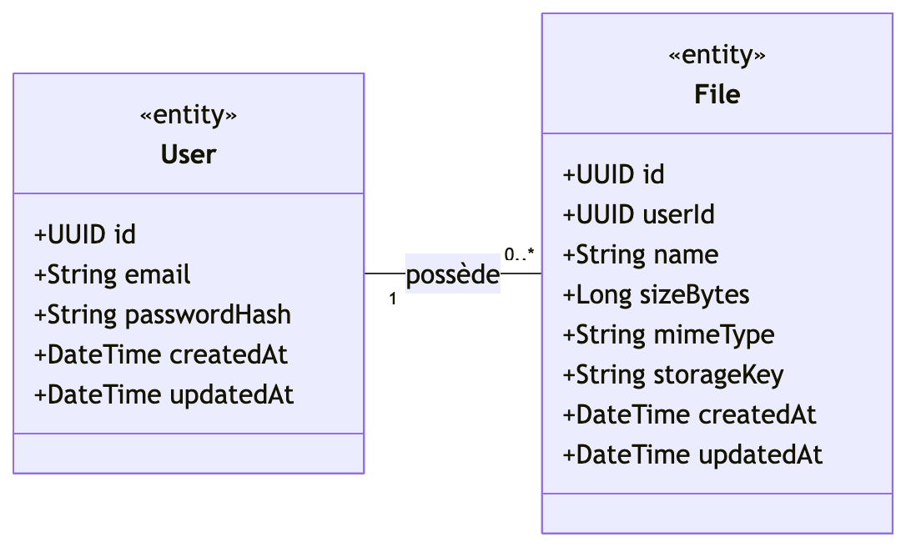

DataShare
Plateforme de partage de fichiers sécurisée
Soutenance OpenClassrooms — Parcours Architecte Logiciel
Jean-Baptiste Paris
Contexte fonctionnel
La mission
- DataShare — jeune entreprise, MVP de transfert de fichiers sécurisé pour freelances et PME
- Commanditaire : Lisa, responsable produit
- Mon rôle : référent technique senior
- Délai : 4 semaines, soutenance devant investisseurs
L'objectif
- Permettre à un utilisateur d'uploader un fichier (≤ 1 Go)
- Générer un lien public unique
- Permettre au destinataire de télécharger sans compte
- Consulter son historique et supprimer ses fichiers
Contrainte OC : démontrer des principes d'architecture (SOLID, séparation des responsabilités, patterns) — pas la maîtrise d'un framework.
Périmètre — 6 US obligatoires
MVP implémenté ✓
- US01 — Téléversement (≤ 1 Go, streaming)
- US02 — Téléchargement via lien unique
- US03 — Création de compte
- US04 — Connexion (JWT 8 h)
- US05 — Historique « Mes fichiers »
- US06 — Suppression (soft delete + purge storage)
Hors MVP V2
- US07 — Upload anonyme
- US08 — Tags
- US09 — Mot de passe par fichier
- US10 — Expiration automatique
8 ambiguïtés de la spé tranchées en début de projet.
Schéma BDD laissé extensible pour la V2.
Choix technologiques
| Couche | Choix | Alternatives | Justification clé |
|---|
| Back | Symfony 8 / PHP 8.5 | Laravel, NestJS | DI explicite → SOLID naturel ; pont Django |
| Auth | JWT HS256 + Lexik Bundle | Sessions, OAuth2 | Imposé OC, pattern dominant Symfony, stateless |
| Front | React 18 + TypeScript + Vite | Vue, Angular | Productivité maximale sur 4 semaines |
| État | Zustand + persist | Redux, Context | ~1 KB, API minimaliste, JWT persisté |
| HTTP | Axios | Fetch, TanStack Query | Intercepteurs natifs → Bearer injecté partout |
| BDD | PostgreSQL 18 | MongoDB | Modèle 100 % relationnel, transférable pro |
| Stockage | FS local + StorageInterface | AWS S3 direct | DIP : swap S3 en V2 sans toucher au métier |
| Tests | PHPUnit · Vitest · Cypress · k6 | — | Pyramide complète + perf endpoint critique |
Tableau complet (19 lignes, 4 colonnes avec alternatives) → document technique L1 §2
Architecture
5 ADRs structurants
- ADR 0001 — Streaming upload
RAM constante, agnostique stockage
- ADR 0002 — JWT HS256
localStorage + Bearer, 8 h, sans refresh
- ADR 0003 — Stack technique
6 critères pondérés, Symfony + React + Postgres
- ADR 0004 — Pas d'auto-login
SRP register/login, extensible email V2
- ADR 0005 — Design system
CSS Modules + tokens, 9 composants
Modèle de données & API
Modèle de domaine (UML)

- Index composite
(user_id, created_at DESC)
deletedAt ajouté (soft delete US06)
8 endpoints REST
| Méth. | Path | Auth |
|---|
| POST | /api/auth/register | — |
| POST | /api/auth/login | — |
| POST | /api/files | JWT |
| GET | /api/files | JWT |
| DELETE | /api/files/{id} | JWT |
| GET | /api/share/{token} | — |
| GET | /api/share/{token}/download | — |
RFC 7807 erreurs · envelope { data } · camelCase · ISO 8601
Démonstration
- Création de compte → connexion → page upload
- Upload d'un fichier · obtention du lien public unique
- Ouverture du lien en navigation privée (destinataire anonyme)
- Téléchargement via
Content-Disposition: attachment serveur
- « Mon espace » → historique · filtre Actifs/Supprimés
- Suppression → blob purgé du stockage · métadonnée conservée
Gestion d'erreurs visible : upload de .exe → rejet client + serveur (magic bytes) · fichier > 1 Go → 413 avant chargement du body · token inconnu → 404 anti-énumération
Vue mobile via DevTools : drawer sidebar + kebab menu sur les file rows
Documentation technique
README — installation en 1 commande
git clone …/OC-DataShare
make install # deps + BDD + JWT keypair
make back # API Symfony :8000
make front # Vite :5173
make test-back # PHPUnit 77 tests
make test-front # Vitest 128 tests
make test-e2e # Cypress 19 scénarios
make perf-download # k6 50VUs / 1 min
OpenAPI 3.0.3
docs/conception/openapi.yaml- 8 endpoints · schémas FileSummary, SharedFile, ErrorProblem
- Visualisable sur editor.swagger.io
4 fichiers qualité
TESTING.md — pyramide + coverageSECURITY.md — scans + procéduresPERF.md — k6 + LighthouseMAINTENANCE.md — MAJ + rollback + RTO/RPO
Tests & qualité
93,7 %
Coverage lignes back
94,41 %
Coverage lignes front
| Niveau | Outil | Volume |
|---|
| Back — unit · integration · functional | PHPUnit 13 + PCOV | 77 |
| Front — unit · composants | Vitest 4 + RTL + jsdom | 128 |
| E2E — parcours utilisateur | Cypress 15 (headless) | 19 |
Cible OC ≥ 70 % battue 1,3× sur les 2 stacks · npm audit + composer audit : 0 vulnérabilité
Performance
Endpoint critique — download (k6)
50 VUs · 1 min · fichier 1 Mo
11 GB transférés · 0 erreur / 10 344 · RAM PHP stable 80-100 Mo → ADR 0001 streaming validé sous charge
Bundle front — Lighthouse
- FCP 2,0 s · TBT 0 ms · CLS 0
- Best Practices 100/100 · A11y 92/100
Pilotage & revue du copilote IA
Posture tout au long du projet
- Je pilote, conçois, assigne, revois systématiquement
- Règle absolue : jamais de code sans feu vert explicite
- Toute décision argumentée → tracée dans les ADRs
US01 — vitrine OC
- Branche dédiée
feat/us01-upload
- 9 commits
feat(ai): isolés par sous-tâche
- Validation orale avant chaque commit
- Doc dédiée
vitrine-us01-upload.md
Recadrages concrets
- R1 — Entité File : 5 divergences vs modèle de domaine → question « on est conforme ? » → réécriture complète.
- R2 — StorageInterface : signature divergeait de l'ADR 0003 D4 → réalignement + ADR enrichi.
- R3 — Scope MVP : US10 expiration détectée hors périmètre → non implémentée, tracée dans NOTES.md.
Quand le copilote dérive, je recadre — le code est réécrit, la règle est persistée.
Merci
Questions, échanges, retours.
github.com/Jean-Baptiste-Paris/OC-DataShare
L1 Documentation technique · OpenAPI · TESTING · SECURITY · PERF · MAINTENANCE · Journal IA